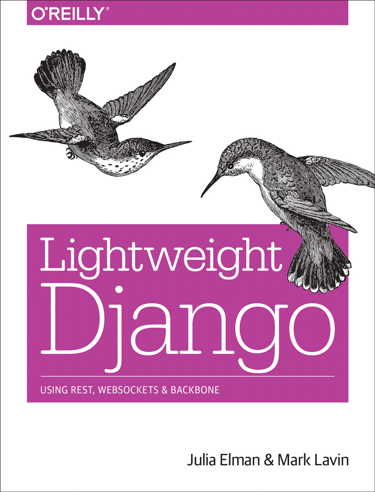

Anatomy of a Django Project
Mark Lavin - DjangoCon 2014
Introduction
What is a Django project?


startproject
user@host:$ mkvirtualenv myproject
New python executable in myproject/bin/python
Installing setuptools, pip...done.
(myproject)user@host:$ pip install django
Downloading/unpacking django
...
Successfully installed django
Cleaning up...
(myproject)user@host:$ django-admin.py startproject myproject
(myproject)user@host:$ tree myproject/
myproject/
├── manage.py
└── myproject
├── __init__.py
├── settings.py
├── urls.py
└── wsgi.py
1 directory, 5 files
manage.py
#!/usr/bin/env python
import os
import sys
if __name__ == "__main__":
os.environ.setdefault("DJANGO_SETTINGS_MODULE", "myproject.settings")
from django.core.management import execute_from_command_line
execute_from_command_line(sys.argv)
django-admin.py
#!/usr/bin/env python
from django.core import management
if __name__ == "__main__":
management.execute_from_command_line()
No manage.py
(myproject)user@host:$ cd myproject/ (myproject)user@host:$ add2virtualenv . (myproject)user@host:$ echo "export DJANGO_SETTINGS_MODULE=myproject.settings" >> $VIRTUAL_ENV/bin/postactivate (myproject)user@host:$ echo "unset DJANGO_SETTINGS_MODULE" >> $VIRTUAL_ENV/bin/postdeactivate (myproject)user@host:$ deactivate user@host:$ workon myproject (myproject)user@host:$ rm manage.py (myproject)user@host:$ django-admin.py runserver
settings.py
"""
Django settings for myproject project.
For more information on this file, see
https://docs.djangoproject.com/en/1.6/topics/settings/
For the full list of settings and their values, see
https://docs.djangoproject.com/en/1.6/ref/settings/
"""
# Build paths inside the project like this: os.path.join(BASE_DIR, ...)
import os
BASE_DIR = os.path.dirname(os.path.dirname(__file__))
...
urls.py
from django.conf.urls import patterns, include, url
from django.contrib import admin
admin.autodiscover()
urlpatterns = patterns('',
# Examples:
# url(r'^$', 'myproject.views.home', name='home'),
# url(r'^blog/', include('blog.urls')),
url(r'^admin/', include(admin.site.urls)),
)
wsgi.py
"""
WSGI config for myproject project.
It exposes the WSGI callable as a module-level variable named
``application``.
For more information on this file, see
https://docs.djangoproject.com/en/1.6/howto/deployment/wsgi/
"""
import os
os.environ.setdefault("DJANGO_SETTINGS_MODULE", "myproject.settings")
from django.core.wsgi import get_wsgi_application
application = get_wsgi_application()
settings.py
(Revisited)
...
ROOT_URLCONF = 'myproject.urls'
WSGI_APPLICATION = 'myproject.wsgi.application'
...

TEMPLATE_DIRS
STATICFILES_DIRS
startproject Templates
django-admin.py startproject newproject --template=<path-to-tempalte>
App/Project Layout
project_name
├── project_name
│ ├── __init__.py
│ ├── admin.py
│ ├── models.py
│ ├── static
│ │ ├── css
│ │ ├── img
│ │ └── js
│ ├── templates
│ ├── tests.py
│ └── views.py
├── settings.py
├── urls.py
└── wsgi.py
App/Project Settings
...
BASE_DIR = os.path.dirname(__file__)
...
INSTALLED_APPS = (
'{{ project_name }}',
'django.contrib.admin',
'django.contrib.auth',
'django.contrib.contenttypes',
'django.contrib.sessions',
'django.contrib.messages',
'django.contrib.staticfiles',
)
...
ROOT_URLCONF = 'urls'
WSGI_APPLICATION = 'wsgi.application'
...
Micro Project Layout
project_name
└── project_name.py
Micro Project
import os
import sys
from django.conf.urls import url
from django.http import HttpResponse
os.environ.setdefault("DJANGO_SETTINGS_MODULE", __name__)
DEBUG = True
SECRET_KEY = 'foo'
ROOT_URLCONF = [
url(r'^$', lambda x: HttpResponse('Hello World'), ),
]
if __name__ == "__main__":
from django.core.management import execute_from_command_line
execute_from_command_line(sys.argv)
Turnkey App Layout
project_name/
├── project_name
│ ├── __init__.py
│ ├── admin.py
│ ├── models.py
│ ├── static
│ ├── templates
│ ├── tests.py
│ ├── views.py
│ └── wsgi.py
└── setup.py
Turn-key App wsgi.py
from django.conf import settings
if not settings.configured:
# Default settings
settings.configure(
ROOT_URLCONF='{{ project_name }}.urls',
INSTALLED_APPS=(
'{{ project_name }',
...
),
)
from django.core.wsgi import get_wsgi_application
application = get_wsgi_application()
Turn-key App Deployment
(turn-key)user@host:$ pip install project_name gunicorn
(turn-key)user@host:$ gunicorn project_name.wsgi
Photo Credits
- https://www.flickr.com/photos/bdesham/2432400623
- https://www.flickr.com/photos/toomuchdew/4074047756
- https://www.flickr.com/photos/calavera/65098350/
- https://www.flickr.com/photos/starsalive/4498944830/
- https://www.flickr.com/photos/macbeck/3985839229/
- https://www.flickr.com/photos/alexblanck/5557452102/
- https://www.flickr.com/photos/cdevers/5609962642/
Thanks! Questions?
Slides - http://caktus.github.io/talks/djangocon/2014/django-project/
